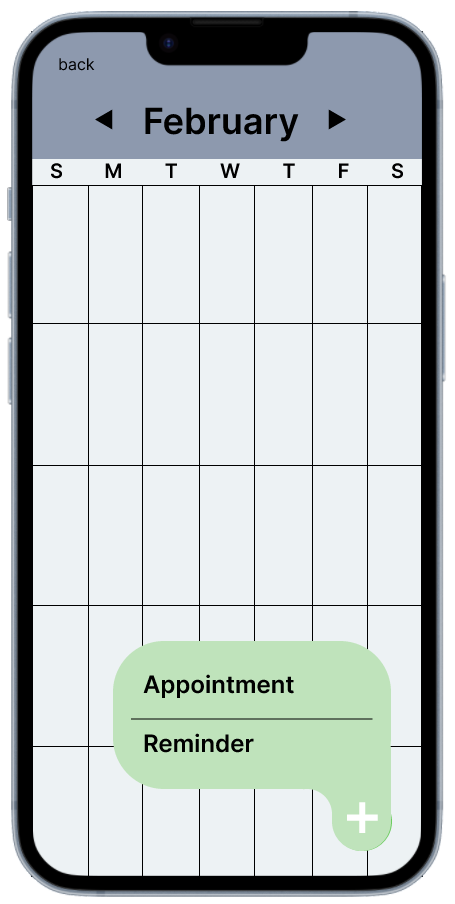
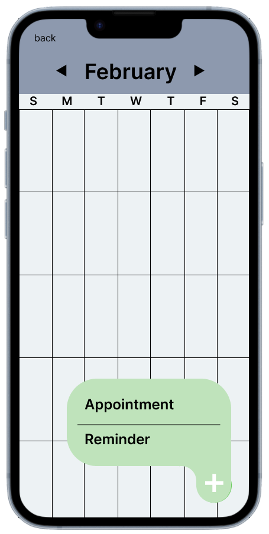

I believe interviews would be the best approach. Since it is a two way conversation, the interviewed may bring up information I would not have ever thought of and that would not have fit in a limited survey answer. Key Questions I would ask in an interview: What would you look for in a medicare app?
Persona Judith – 70 years old She has smthn serious and would always have to take a taxi to the hospital. She doesn’t mind getting out of the house and seeing the nurses, but she does find it a little tiresome. When there is a small concern, she won’t even bother making an appointment, thinking the travel is not worth it. She also has trouble with the phone system, constantly having to answer prompts to properly assign her to the correct receptionist to take her appointment. She would find it useful to have an app to book her appointments and will give her access to a professional to resolve minor concerns.
| Stages of Journey | Motivation | Contact Professional | Book Appointment | |||
|---|---|---|---|---|---|---|
| Activities | Minor health concerns want to be resolved | Logs onto with face recognition and waits to speak with a professional | Chats with doctor and is informed the issue is minor, but can book an appointment if desired | Books an appointment in app | Checks medication usage to see whether they need to refill | Orders more medication from pharmacy and books the pick up the same day as the doctor meet-up |
| Experience | A little anxious to know what it could be | Happy to log on quick and get in queue with a professional | Happy with receiving useful information without having to leave the house. | Happy to not have to wait on the phone. Happy it saves to calendar automatically | Unhappy to see that they’ll need to pay again for medication. Grateful to remember and how easy it is to check | Happy that it is easy to do everything in one app |
| Customer Expectations | Quick and satisfying responses | Quick and easy design | Professional advice |


colour palette and font


 
clickable prototype

clickable prototype